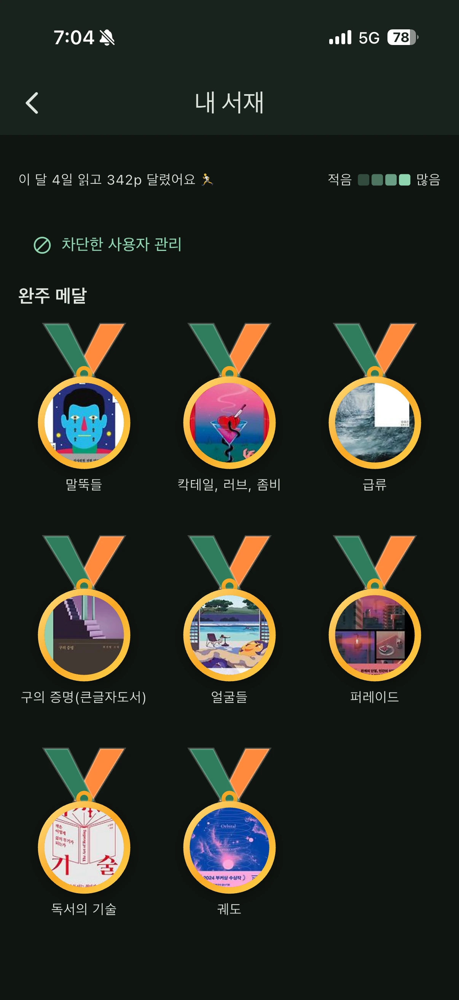
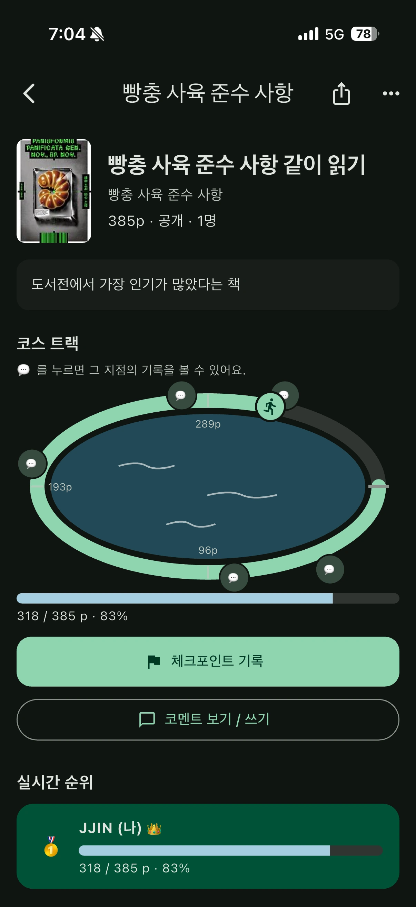

함께 읽기
여럿이 함께, 끝까지.
같은 책을 읽는 사람들이 하나의 코스에 모여요. 서로의 진행 상황을 나누며 각자의 속도로 완주해요.


작은 생각에서 시작된 앱.
오늘 읽은 페이지를 남기고, 같은 코스 위의 독자들을 만나고.
혼자 시작한 독서가 함께 완주하는 경험이 됩니다.
함께 달리는 독서 코스
책 한 권이 여러 독자가 함께 달리는 코스가 됩니다. 오늘 읽은 페이지를 기록하고, 같은 코스에 있는 사람들의 진행 상황을 보며 마지막 페이지까지 나아가요.
함께 읽기
같은 책을 읽는 사람들이 하나의 코스에 모여요. 서로의 진행 상황을 나누며 각자의 속도로 완주해요.
페이지별 기록
아직 읽지 않은 내용은 남겨두고, 내가 지나온 지점의 생각을 나눠요.
완주 메달
마지막 페이지를 넘긴 책은 메달로 남아요. 서재에 나만의 완주 기록을 모아요.
앱, 그리고 소설.
앱을 사용하는 사람들을 상상하며 쓴 단편소설과,
달리기에서 독서 앱이 시작된 이유.
리더스 하이
iOS · Android